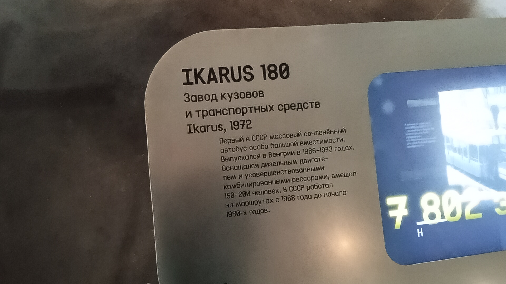
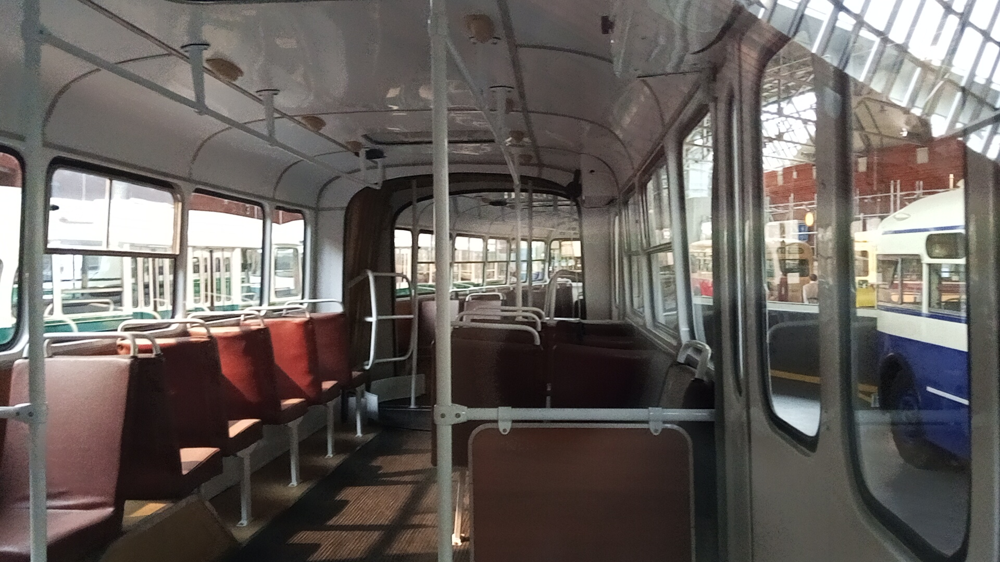

Ikarus 180 (1969)
Перед вами первый в СССР массовый сочленённый автобус особо большой вместимости. Данный экземпляр был выпущен в 1969 году на заводе Ikarus в Венгрии и сейчас является частью коллекции Музея Транспорта Москвы.
В СССР эти машины работали на маршрутах с 1968 года до начала 1980-х годов. Экспонат оснащён дизельным двигателем и усовершенствованными комбинированными рессорами. Вмещал от 150 до 200 человек.
Общая информация об экспонате
🏭 Производство
Завод-изготовитель: Завод кузовов и транспортных средств Ikarus (Венгрия)
Модель: Ikarus 180
Год выпуска: 1969
Тип: Сочленённый городской автобус особо большой вместимости
📍 Текущее состояние
Местонахождение: Музей Транспорта Москвы
Состояние: Не эксплуатируется (музейный экспонат)
Период работы в СССР: с 1968 года до начала 1980-х
⭐ Роль в истории: Это был первый массовый сочленённый автобус в Советском Союзе. До него такие машины только испытывали. Именно «Икарусы-180» доказали необходимость использования автобусов особо большой вместимости в городах. Экспонат сохранил исторический облик и является одним из немногих уцелевших экземпляров.
Технические характеристики
Основные параметры
Длина: 16,5 м
Ширина: 2,5 м
Высота: 3,5 м
Сухая масса: 13 000 кг
Вместимость: 150–200 человек
Силовая установка
Двигатель: дизельный, горизонтальный
Производство: по лицензии MAN (комбинат Rába)
Мощность: около 200 л.с.
Расположение: под полом центральной части
Подвеска: усовершенствованные комбинированные рессоры
История экспоната и модели
Серийное производство
Модель выпускалась в Венгрии с 1966 по 1973 год. За это время было произведено около 7 800 машин, большая часть которых отправилась в СССР и ГДР.
Дебют в Москве
Осенью 1968 года первые 50 машин прибыли в столицу. Они были распределены между 6-м и 7-м автобусными парками и обслуживали районы, не охваченные метрополитеном.
Год выпуска экспоната
Именно эта машина сошла с конвейера завода Ikarus в 1969 году. Она успела застать расцвет эпохи «гармошек» на улицах советских городов.
Эксплуатация и списание
Советским водителям машина нравилась за отличную манёвренность и экономичный дизель. Но ремонтники жаловались на сложность обслуживания. Машины проработали до начала 1980-х годов, после чего были списаны.
Сохранение для истории
Данный экземпляр был отреставрирован и занял достойное место в экспозиции Музея Транспорта Москвы. Это один из немногих сохранившихся представителей первой массовой серии «гармошек» в СССР.
Особенности конструкции
Полунесущий кузов
Оригинальная полунесущая конструкция. Дизельный двигатель расположен горизонтально под полом центральной части. Это обеспечило максимум простора в салоне.
Сочленение
Шарнирный узел, связанный с поворотной осью колёс в прицепе. Благодаря этому автобус длиной более 16 метров обладал манёвренностью, сравнимой с одиночными машинами.
Двигатель по лицензии MAN
Горизонтальный шестицилиндровый дизель выпускался по лицензии западногерманской фирмы MAN на комбинате Rába. Мощность около 200 л.с.
Особенности салона
В салоне были установлены мягкие диваны. В экспозиции музея автобус представлен с характерной бело-красной окраской, которая была стандартной для тех лет.
🎉 Символ эпохи: Ikarus 180 открыл эру «гармошек» на улицах советских городов. Его наследник Ikarus 280 стал самым массовым сочленённым автобусом в истории, но именно 180-й проложил ему дорогу.
Фотогалерея

Экспонат 1969 года из Музея Транспорта Москвы.

Музейная информация (Завод Ikarus, 1972).

Внутреннее убранство салона.
Нажмите на фото для увеличения
«Именно положительный опыт эксплуатации 180-х, который продолжался вплоть до начала 1980-х, доказал необходимость использования автобусов особо большой вместимости в городах».